Let's Start
Q.The equivalent conductance of NaCl at concentration C and at infinite dilution are λC and λ∞ , respectively. The correct relationship between λC and λ∞ is given as: (Where the constant B is positive)- λC=λ∞ + BC
- λC=λ∞ - BC
- λC=λ∞ - B√C
- λC=λ∞ + B√C
Explanation
Q.For complete combustion of ethanol, C₂H₅OH(l) + 3O₂ (g) → 2CO₂ (g) + 3H₂O(l), the amount of heat produced as measured in bomb calorimeter,is 1364.47 kJ mol-1 at 250C. Assuming ideality the enthalpy of combustion, ΔcH, for the reaction will be:
- -1366.95 kJ mol-1
- -1361.95 kJ mol-1
- -1460.95 kJ mol-1
- -1350.50 kJ mol-1
Explanation
Q.Resistance of 0.2 M solution of an electrolyte is 50 Ω.The specific conductance of the solution is 1.4 S m-1. The resistance of 0.5 M solution of the same electrolyte is 280 Ω. The molar conductivity of 0.5 M solution of the electrolyte in S m2 mol-1 is:
- 5 × 10-4
- 5 × 10-3
- 5 × 10 3
- 5 × 10 2
Explanation
Q.For the estimation of nitrogen, 1.4 g of an organic compound was digested by Kjeldahl method and the evolved ammonia was absorbed in 60 mL of M/10 sulphuric acid. The unreacted acid required 20 mL of M/10 sodium hydroxide for complete neutralization. The percentage of nitrogen in the compound is
- 6%
- 10%
- 3%
- 5%
Explanation
Q.CsCl crystallises in body centred cubic lattice. If ‘a’ is its edge length then which of the following expressions is correct?
- rCs+ + rCl- = 3a
- rCs+ + rCl- = 3a/2
- rCs+ + rCl- = √3a/2
- rCs+ + rCl- = √3a
Explanation
Q.If Z is a compressibility factor, van der Waals equation at low pressure can be written as:
- Z=1 + RT/Pb
- Z=1 - a/RTV
- Z=1 - pb/RT
- Z=1 + pb/RT
Explanation
Q.The correct set of four quantum numbers for the valence electrons of rubidium atom (Z = 37) is:
- 5, 0, 0, +1/2
- 5, 1, 0, +1/2
- 5, 1, 1, +1/2
- 5, 0, 1, +1/2
Explanation
Q. From the following statements regarding H2O2, choose the incorrect statement :
- It has to be stored in plastic or wax lined glass bottles in dark
- It has to be kept away from dust
- It can act only as an oxidizing agent
- It decomposes on exposure to light
Explanation
Q. Which one has the highest boiling point ?
- Kr
- Xe
- He
- Ne
Explanation
Q. Assertion: Nitrogen and oxygen are the main components in the atmosphere but these do not react to form oxides of nitrogen. Reason: The reaction between nitrogen and oxygen requires high temperature.
- The assertion is incorrect, but the reason is correct
- Both the assertion and reason are incorrect
- Both assertion and reason are correct, and the reason is the correct explanation for the assertion
- Both assertion and reason are correct, but the reason is not the correct explanation for the assertion
Explanation
Q. 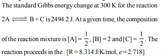
- forward direction because Q < Kc
- reverse direction because Q < Kc
- forward direction because Q > Kc
- reverse direction because Q > Kc
Explanation
Q. Which among the following is the most reactive ?
- I₂
- IC1
- Cl₂
- Br₂
Explanation
Q. The vapour pressure of acetone at 20°C is 185 torr. When 1.2 g of a non-volatile substance was dissolved in 100 g of acetone at 20°C, its vapour pressure was 183 torr. The molar mass (g mol-1) of the substance is :
- 128
- 488
- 32
- 64
Explanation
Q. 3 g of activated charcoal was added to 50 mL of acetic acid solution (0.06N) in a flask. After an hour it was filtered and the strength of the filtrate was found to be 0.042 N. The amount of acetic acid adsorbed (per gram of charcoal) is :
- 42 mg
- 54 mg
- 18 mg
- 36 mg
Explanation
Q. The synthesis of alkyl fluorides is best accomplished by :
- Finkelstein reaction
- Swarts reaction
- Free radical fluorination
- Sandmeyer's reaction
Explanation
Q. The color of KMnO4 is due to :
- L→ M charge transfer transition
- σ - σ* transition
- M → L charge transfer transition
- d → d transition
Explanation
Q. In Carius method of estimation of halogens, 250 mg of an organic compound gave 141 mg of AgBr. The percentage of bromine in the compound is : (at. mass Ag =108; Br = 80)
- 48
- 60
- 24
- 36
Explanation
Q. The number of geometric isomers that can exist for square planar complex [Pt(Cl)(py)(NH3)(NH2OH)]+ is (py = pyridine) :
- 4
- 6
- 2
- 3
Explanation
Q. Two Faraday of electricity is passed through a solution of CuSO4. The mass of copper deposited at the cathode is (at. mass of Cu = 63.5 amu)
- 2g
- 127g
- 31.75g
- 63.5g
Explanation
Q.The intermolecular interaction that is dependent on the inverse cube of distance between the molecules is :
- London force
- hydrogen bond
- ion - ion interaction
- ion - dipole interaction
Explanation
Q.Which of the following compounds will exhibit geometrical isomerism ?
- 2 - Phenyl but-1 -ene
- 1, 1 - Diphenyl prop- 1 -ene
- 1 - Phenyl but- 2 -ene
- 3 - Phenyl but-1 -ene
Explanation
Q.Higher order (>3) reactions are rare due to :
- shifting of equilibrium towards reactants due to elastic collisions
- loss of active species on collision
- low probability of simultaneous collision of all the reacting species
- increase in entropy and activation energy as more molecules are involved
Explanation
Q.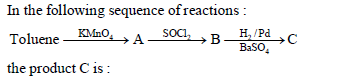
- C6H5CH2OH
- C6H5CHO
- C6H5COOH
- C6H5CH3
Explanation
Q.The ionic radii (in Å) of N3-, O2- and F- are respectively
- 1.71, 1.40 and 1.36
- 1.71, 1.36 and 1.40
- 1.36, 1.40 and 1.71
- 1.36, 1.71 and 1.40
Explanation
Q.Which of the following is the energy of a possible excited state of hydrogen ?
- –3.4 eV
- +6.8 eV
- +13.6 eV
- –6.8 eV
Explanation
Q.Sodium metal crystallizes in a body centred cubic lattice with a unit cell edge of 4.29Å. The radius of sodium atom is approximately :
- 5.72Å
- 0.93Å
- 1.86Å
- 3.22Å
Explanation
Q.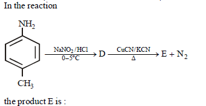
- 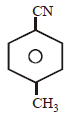
- 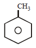
- 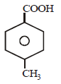
- 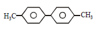
Explanation
Q.Which one of the following alkaline earth metal sulphates has its hydration enthalpy greater than its lattice enthalpy ?
- BaSO4
- SrSO4
- CaSO4
- BeSO4
Explanation
Q.Which compound would give 5 - keto - 2 - methylhexanal upon ozonolysis ?
- 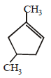
- 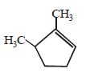
- 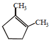
- 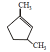
Explanation
Q.Zerevitinov’s determination of active hydrogen in a compound is based upon its reaction with
- Na
- CH3Mgl
- Zn
- Al
Explanation
Q.In the reaction of phenol with CHCl₃, and aqueous NaOH at 70°C(343K),the electrophile attacking the ring is
- CHCl₃
- CHCl₂
- :CCl₂
- COCl₂
Explanation
Q.Which of the following reaction is used to increase the length of the carbon chain?
- Wolff Kishnn’s reaction
- Clemmensen reduction
- Dearboxylation reaction
- Wurtz reaction
Explanation
Q.Which of the following acts as Electrophile in the sulphonation of benzene?
- SO2
- SO3H+
- SO3
- SO3H-
Explanation
Q.The dihedral angle in the staggered conformation of C2H6 is
- 1200
- 600
- 00
- 900
Explanation
Q. Arrange the following in decreasing order of their boiling points.
(I) n-Butane
(II) 2-Methylbutane
(III) n-Pentane
(IV) 2,2-Dimethylpropane
- I > II > III > IV
- II > III > IV > I
- IV> III> II> I
- III >II> IV > I
Explanation
Q.What is the molar solubility of PbI2
Ksp of PbI2 =7.1 x 10-9
- 12 x 10-3 M
- 1.4 x 10-3 M
- 1.2 x 10-2 M
- 1.2 x 10-3 M
Explanation
Q. Considering entropy(S) thermodynamic parameters the criteria for the spontaneity of any process is:
- △S system + △S surroundings > 0
- △S system – △S surroundings < 0
- △S system > 0
- △S surroundings > 0
Explanation
Q. The addition of carbonyl compound to HCN is an example of
- Nucleophilic substitution
- Electrophilic addition
- Nucleophilic addition
- Electrophilic substitution
Explanation
Q. Nucleophilicity order is correctly represented by
- CH3- < NH2- < HO- < F-
- CH3- > NH2- > HO- > F-
- NH2- > F- > HO- >CH3-
- CH3- ≃ NH2- > HO- ≃ F-
Explanation
Q. The correct pair regarding property given in bracket is
- F₂ > Cl₂ (Oxidising character)
- F > Cl (Electron affinity)
- F < Cl (Electronegativity)
- O > N (lonisation energy)
Explanation
Q. Industrially Hydrogen peroxide is prepared by which method?
- Electrolytic oxidation of acidified sulphate solutions
- Exhaustive electrolysis of water
- Acidifying barium peroxide
- Auto oxidation of 2-alkyl anthraquinols
Explanation
Q. In the reaction 3Br2 + 6CO32- + 3H2O → 5Br- + BrO3- + 6HCO3-
- bromine is oxidised and carbonate is reduced
- bromine is reduced and water is oxidised
- bromine is both reduced and oxidised
- bromine is neither reduced nor oxidised
Explanation
Q.The strong conjugate base is
- NO3-
- Cl-
- SO42-
- CH3COO-
Explanation
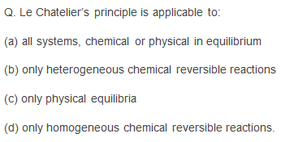
Explanation
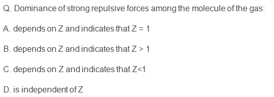
Explanation
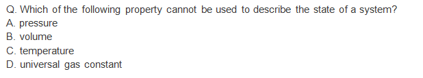
Explanation
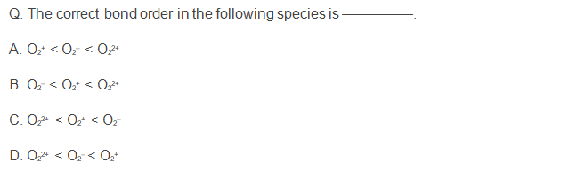
Explanation
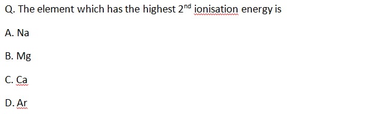
Explanation
Q.In the ground state of a cobalt atom there are _____ unpaired electrons and the atom is _____.
- 3, paramagnetic
- 5, paramagnetic
- 2, diamagnetic
- 0, diamagnetic
Explanation
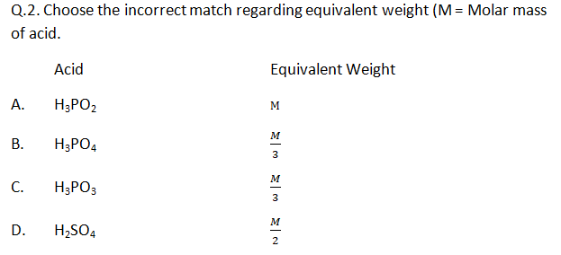